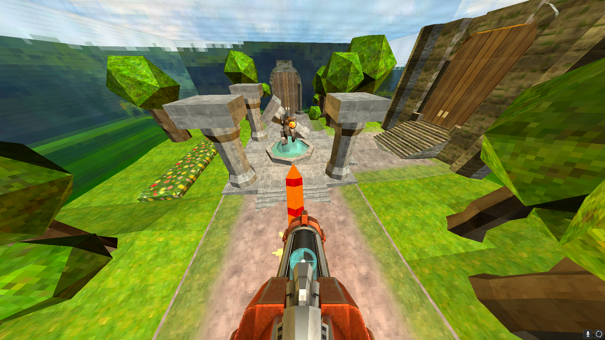
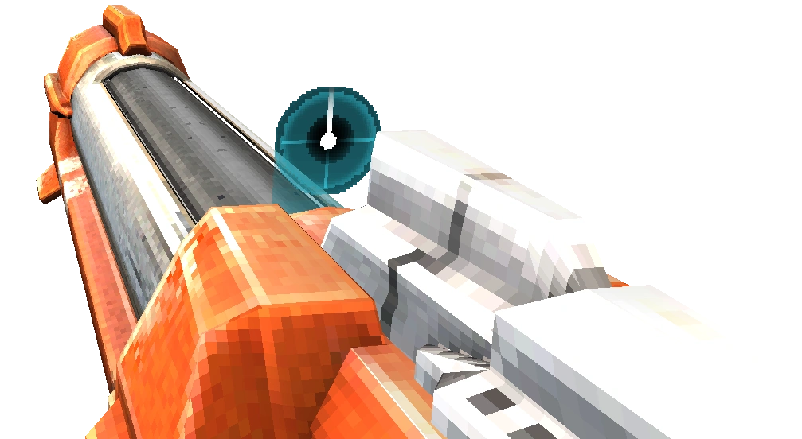
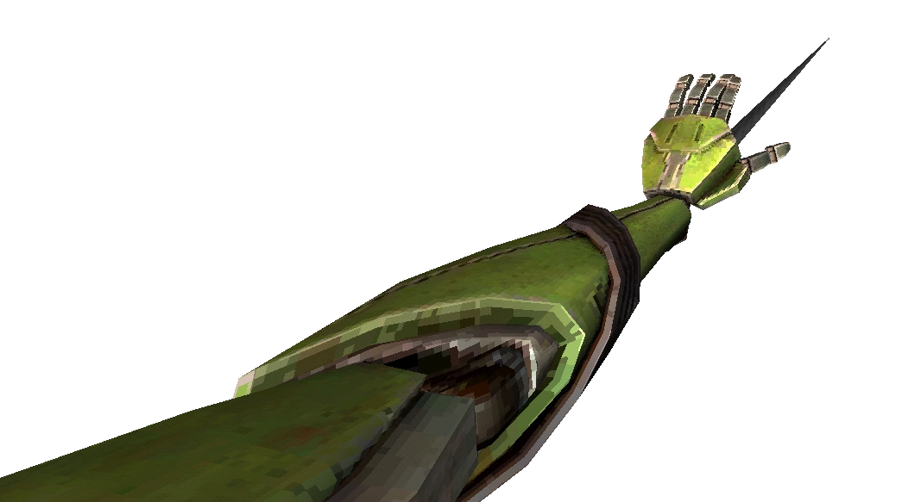
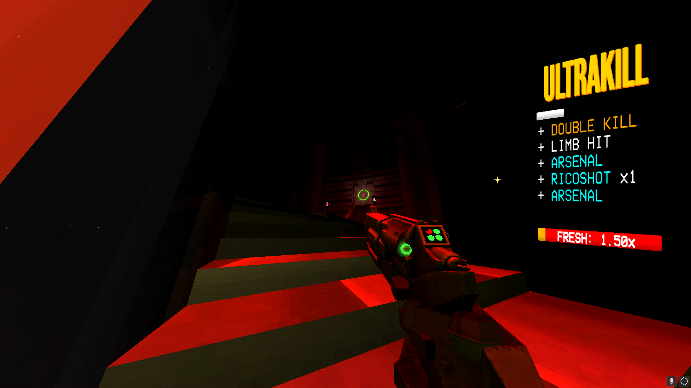

ULTARKILL is a game developed by Hakita and PITR and was published by New Blood Games.
In this game you play as a machine named V1. Descend through the layers of hell as you take out every husk, demon, machine, and angel in your way. Fight with insteresting mechanics and move like you're speeding.
Mechanics
Movement
This game has an arsenal of movement options, such as:

Jumping
Wall Jumping
Wall Sliding
Dashing
Dash Jumping
Sliding
Slide Jumping
Ground Slam
Skimming (Sliding on water)
Rocket Surfing
Rocket Jumping
Using any kind of explosive weapon to get varying speed boosts
And a lot more!
Weapons
As of the current version (?) there are 5 weapons with an average of 2 variations per weapon.
Revolvers
Piercer Variant
Marksman Variant
Shotguns
Core Variant
Pump Variant
Nailguns
Attractor Variant
Overheat Variant
Railcannons
Electric Variant
Screwdriver Variant
Malicious Variant
Rocket Launchers
Freeze Frame Variant

Arms
Feedbacker (not a variant)
Knuckleblaster (not a variant)
Whiplash (not a variant)

Combine Alt Fires for deadly combos!
Style Meter
The Style Meter is a mechanic that that shows a letter grade depending on your style. Progress through letters D,C,B,A,S,SS,SSS, and ULTRAKILL to achieve style points and buffs so you can stay stylish. Get more style by finishing off enemies with different weapons, ricochets, punches, and really anything you can think of (get creative!).

The Soundtrack
The soundtrack of ULTRAKILL has a new song each level and a theme each layer.
Below is every song used in the layer of hell called Limbo as a sample for the rest of the soundtrack.
"A Thousand Greetings" really feels like 'heaven' has just accepted you. You did it. All of your trials and tribulations finally payed off, relax (continues to "A Shattered Illusion").
"A Shattered Illusion" conveys exactly what its name entails. The song is a panic-inducing, fragmented version of "A Thousand Greetings"
"A Complete and Utter Destruction of the Senses" perfectly portrays the level it takes place in, "The Burning World".
"Castle Vein" starts off instantly, no filler or calming music. Limbo is trying as hard as it can to stop you, throwing more enemies than ever before at you.
"Claude Debussy: Claire De Lune" plays right before the final fight of Limbo in the level "Claire de Lune". It encapsulates the feeling of 'calm before the storm'.
"Versus" abruptly starts when the 'upgraded' version of you, V2, crashes through a window to face you. This iconic song plays for the first and last time you fight V2.